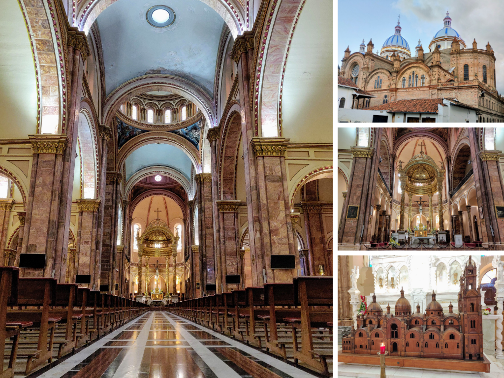
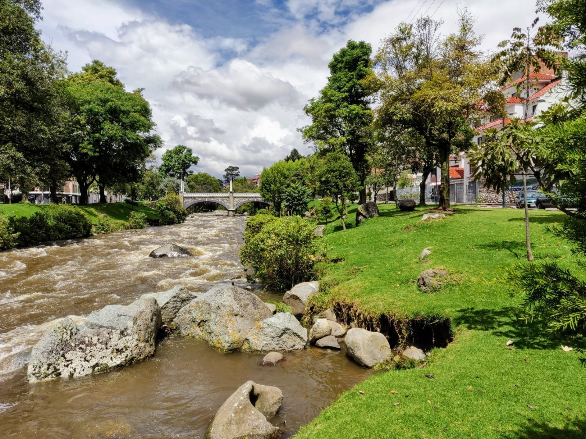
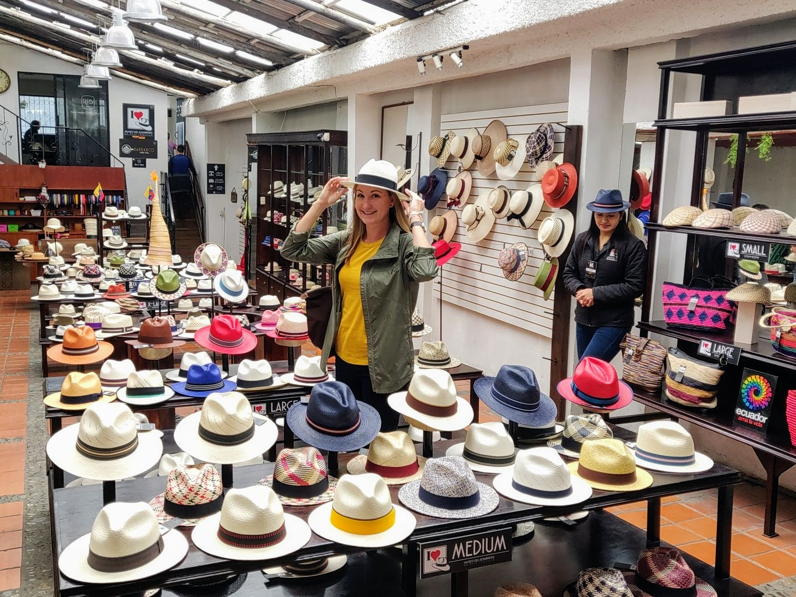
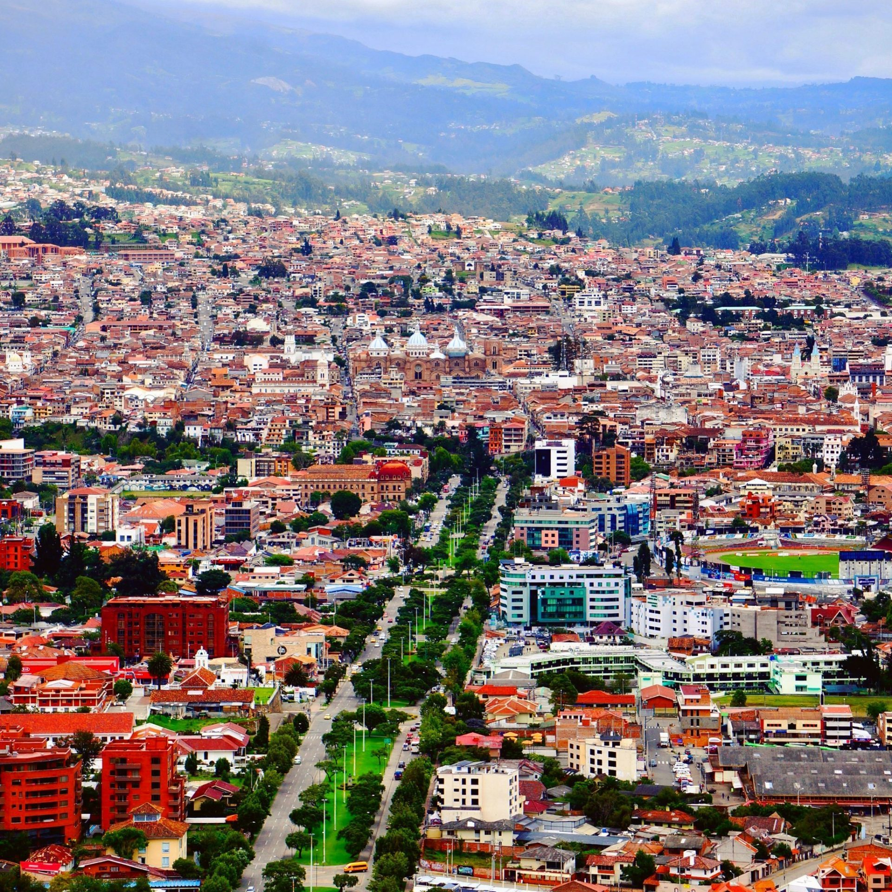

CUENCA
Santa Ana de los Cuatro Ríos de Cuenca, commonly referred to as Cuenca (Kichwa: Tumipampa) is the capital and largest city of the Azuay Province of Ecuador. Cuenca is located in the highlands of Ecuador at about 2,560 metres (8,400 feet) above sea level, with an urban population of approximately 329,928 and 661,685 inhabitants in the larger metropolitan area.
The center of the city is listed as a UNESCO World Heritage Site due to its many historical buildings and its historical importance as an agricultural and administrative center.

Climb the Towers of Cuenca’s New Cathedral
Cuenca’s Cathedral de la Inmaculada is a centerpiece of the city that is commonly referred to as the New Cathedral. Although construction began in 1885, the cathedral was not completed until nearly a century later (1975). That’s why it’s referred to as the “new cathedral.” The cathedral’s signature blue domes have defined Cuenca’s skyline ever since.
A visit inside this grand Catholic church is a must-do while visiting Cuenca. The New Cathedral is among some of the largest churches in South America. The massive interior is said to be able to fit over 9,000 church-goers. Cuenca’s New Cathedral is easily accessible and open to the public, as faithful Cuencanos pop in throughout the day to worship.
Get a Limpia (Traditional Cleansing) at the Local Market
The Mercado 10 de Agosto is a local Market in Cuenca, where residents come to stock up on fresh fruits and vegetables, among other local products. It’s a great place on its own merit to simply see all the local produce and soak in the market atmosphere.
A limpia is a traditional cleansing that has been passed down through generations. On the bottom floor of Mercado 10 de Agosto, there is a steady stream of customers partaking in this traditional cleansing. Pregnant women and babies appear to form the largest base of limpia clients. Yet everyone from working-class men to sweet old abuelas come to Mercado 10 de Agosto to seek this treatment.
This spiritual cleansing process is meant to help rid anything terrible from within. It’s interesting to watch the action of what’s involved in the cleansing. Yet for a real cultural experience while in Cuenca, visitors can consider jumping right in to get a limpia too!
Stroll, Bike, or Picnic Along Cuenca’s Rio Tomebamba Riverfront
Running along the southern edge of Cuenca’s historic center is a scenic stretch of the Tomebamba River. The river originates up in the mountains of Cajas National Park and flows onward down into the Amazon. On its way down the Andes, the river slices right through the middle of Cuenca.
The Tomebamba River makes for a most pleasant place in Cuenca to take a leisurely stroll from right within the city center. The grassy riverbank is lined with trees that offer shade on sunny days, while colonial buildings loom above. There are a few cafes and restaurants with views along this section of the Tomebamba River. Don’t hesitate to pop in for a coffee, cerveza, or a snack.
And if you happen to be in Cuenca on a Sunday, consider going for a bike ride along the Tomebamba River. Every Sunday morning here in Cuenca, the city provides hundreds of mountain bikes to residents and visitors for free. It’s known as Ruta Recreativa.
Learn About Cuenca’s Production of Panama Hats
Ecuador, not Panama, is the origin and production center to what is well-known around the world as the “Panama Hat.” The reason for this confusing name is because these Ecuadorian hats were being exported to Panama while the Panama Canal was being built in the early 1900s. Then US President Roosevelt visited the construction site and was photographed wearing the hat in Panama. Hence the name “Panama Hat” has stuck ever since.
But make no mistake, this is purely an Ecuadorian product. The town of Montecristi lays claim to the birthplace of Panama hats. Yet it is Cuenca and the surrounding area that has become the largest producer of these hats, which are also known locally as sombreros de paja toquilla.
So when visiting the city, a great thing to do in Cuenca is to learn about the delicate process it takes to produce these hats. You’ll see just how the hats are weaved with painstaking detail, entirely by hand. There are a few factories, “museums,” and shops around Cuenca to explore the craft of this truly Ecuadorian tradition.
Take in Cuenca’s Sweeping Views from the Turi Viewpoint
The Mirador de Turi is a lookout point perched high above the city, with spectacular views down below. Many of Cuenca’s churches and avenues can be easily seen from this high point located on the southern fringes of the city. It makes for a fantastic place for photos, whether attempting to capture the cityscape or to snap a few Cuenca selfies.
Contact us
For more information, please complete this form: